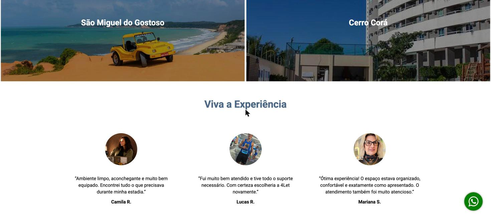
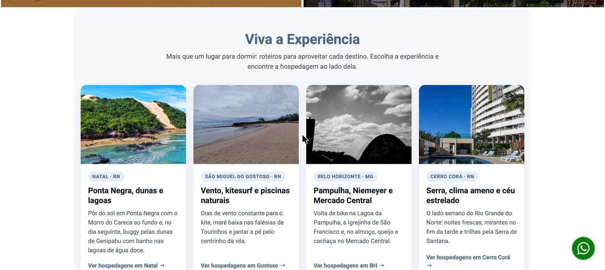
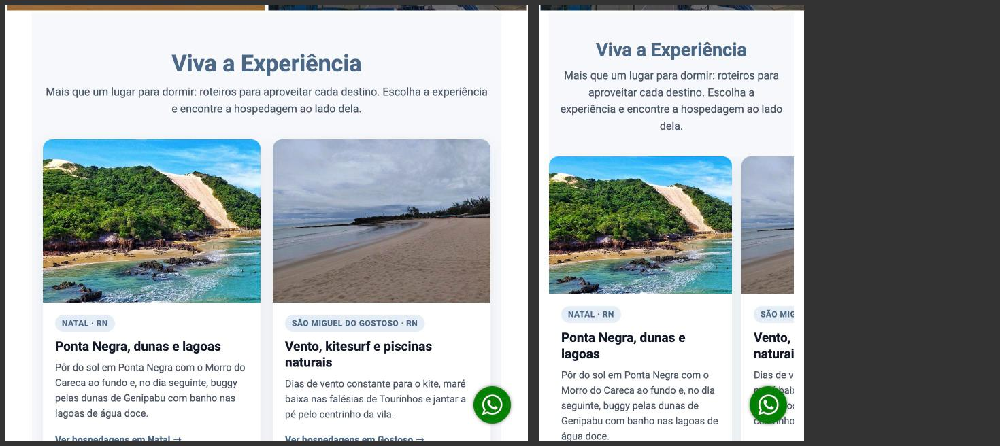
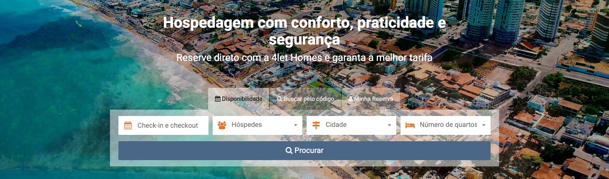

Validação dos fluxos e correções do site www.f4let.com (PT, EN e ES) e do painel da Stays · 18 e 19/11/2026 · Cláusulas 5.2-b e 5.3 do contrato · versão 2
Validei os fluxos do site nas três línguas e apliquei as correções diretamente no painel da Stays, em duas rodadas: a primeira em 18 e 19/11 (menu, Cerro Corá, descrições dos anúncios e páginas legais) e a segunda em 19/11 (os 5 problemas relatados e a home). Antes de cada mudança, anotei o valor antigo; depois, conferi o resultado no site público. Não alterei tarifas, políticas de cancelamento, pagamentos nem cobrança.
| # | Problema relatado | Situação | O que foi feito |
|---|---|---|---|
| 1 | Código de login não chega no e-mail | Pendente (externo) | A causa está confirmada: o DNS do domínio não autoriza o servidor de envio da Stays. A correção são 3 registros na GoDaddy, que estão prontos. |
| 2 | Cliques em cidades vão para 404 ou voltam para a home | Corrigido | Os 5 cards abrem a busca da cidade nas 3 línguas. Cabo Frio, sem imóvel, virou Praia Grande. |
| 3 | Imóvel existe na Stays, mas não aparece no site | Corrigido | Três anúncios estavam desconectados do canal Site. Foram conectados e já aparecem na busca. Também criei a localidade "Praia Grande". |
| 4 | Imóvel pede e-mail ao proprietário e não deixa finalizar | Corrigido | Reserva instantânea ligada em 7 unidades. As 14 unidades mostram "Reserve já". |
| 5 | Depoimentos falsos na home | Corrigido | Removi os depoimentos. Publiquei o bloco "Viva a Experiência" com roteiros reais, em PT, EN e ES. |
Além dos 5 problemas, a seção 7 traz as correções da primeira rodada, e a seção 8, os primeiros ajustes visuais da home.
O código sai pela Stays (servidor Mandrill) em nome de f4let.com, mas o DNS do domínio não autoriza esse envio. Por isso Gmail, Outlook e outros provedores mandam a mensagem para o spam ou a descartam. A conferência foi refeita em 19/11 às 08h50 e nada havia mudado.
| Registro (GoDaddy) | Hoje | Como deve ficar |
|---|---|---|
| TXT @ (SPF), editar o existente | v=spf1 include:spf.em.secureserver.net ?all | v=spf1 include:spf.protection.outlook.com include:spf.em.secureserver.net include:spf.mandrillapp.com ~all |
CNAME mte1._domainkey | não existe | dkim1.mandrillapp.com |
CNAME mte2._domainkey | não existe | dkim2.mandrillapp.com |
Depois de aplicar: avisar a Stays sobre o remetente reservas.br@f4let.com e confirmar o e-mail "Verify your domain for Mandrill". Para aceitar, pedir o código com um Gmail de teste; ele precisa chegar na caixa de entrada com spf=pass e dkim=pass.
Local: Editor do site → Hotsites → Homepage → blocos "Mini banner". Os cards passaram a levar à busca da cidade, com todos os imóveis dela. Quando a cidade tem um único prédio, a Stays abre direto a página desse prédio.
| Card | Antes | Depois | Teste PT/EN/ES |
|---|---|---|---|
| Natal | Só o prédio Verano (VA04I) | Busca do grupo Natal | 200 Verano, com VA03I + VA09I |
| Cabo Frio → Praia Grande | Link vazio, volta para a home (sem imóvel em Cabo Frio) | Busca do grupo Praia Grande, com foto da praia | 200 Residencial Santo Antônio |
| Belo Horizonte | Prédio Del Rey (VA02I) | Busca do grupo BH | 200 |
| São Miguel do Gostoso | Busca por nome da cidade (sem a Pedra Baleia) | Busca do grupo Gostoso | 200 Chalés + Pedra Baleia |
| Cerro Corá | Prédio Colina (VA06I), com foto do prédio | Busca do grupo Cerro Corá, com foto da serra NOVO | 200 |
A 4Let não tem mais imóveis em Cabo Frio. O card dessa cidade passou a ser Praia Grande, com uma foto da própria praia. A localidade "Cabo Frio" também saiu do filtro de busca do site; ela foi desativada, não apagada.
Rio das Ostras-RJ entra assim que o imóvel for publicado. O espaço do card já está reservado na home. Ele só não foi ao ar antes porque, sem imóvel, o clique levaria a uma busca vazia, que era justamente o problema do card antigo.
Causa raiz: três anúncios estavam desconectados do canal Site (Channel Manager → Site Stays → Anúncios do site). Os três já estavam nos grupos de busca; faltava a conexão.
| Anúncio | Antes | Depois |
|---|---|---|
| PK01J · 4let RSA Praia Grande (Residencial Santo Antônio) | Não conectado página dava 404 | Conectado página abre e aparece na busca |
| EE03J · Pousada Pedra Baleia (São Miguel do Gostoso) | Não conectado pousada abria vazia | Conectado aparece na busca |
| VA09I · Verano Ponta Negra T1905 (Natal) | Não conectado fora de qualquer busca | Conectado aparece no Verano |
Localidades da busca: criei o grupo "Praia Grande", que já aparece no filtro "Selecionar localidade", e incluí o T1905 no grupo Natal. O grupo "Todos os Anúncios" já tinha as 14 unidades.
| Teste (2 hóspedes) | Imóveis listados | Pedra Baleia | Santo Antônio |
|---|---|---|---|
| Sem datas | Colina, Chalés, Verano, Del Rey, Pedra Baleia, RSA Praia Grande | aparece | aparece |
| 08–10/12/2026 | Colina, Chalés, Verano, RSA Praia Grande | indisponível | aparece |
| 10–14/01/2027 | Colina, Chalés, Del Rey | indisponível | indisponível |
Nos testes com data, as ausências não vêm da configuração do site. A Pedra Baleia tem diária (R$ 660/noite), mas o calendário tem bloqueios manuais em quase todo o período até out/2027. O Santo Antônio (R$ 259,75/noite) está ocupado ou bloqueado em janeiro. Nenhum calendário foi alterado.
As unidades marcadas como Individual → Não só deixavam o hóspede enviar um pedido e esperar a aprovação do proprietário. Com a aprovação da Track For, passaram para Individual → Sim. Para voltar qualquer unidade ao modo pedido, basta marcar "Não" na mesma tela.
| Unidade | Antes | Depois | Teste (2 hóspedes) |
|---|---|---|---|
| WX01I · Colina Duplo T8404 | Enviar pedido | Reserve já | 08–10/12 · R$ 742,00 · abre a identificação do hóspede |
| HZ01J · Colina Triplo T8403 | Enviar pedido | Reserve já | 08–10/12 · R$ 923,00 |
| ZJ04I · Chalé T1303 | Enviar pedido | Reserve já | 08–10/12 · R$ 1.479,00 |
| VA01I · BH Del Rey | Enviar pedido | Reserve já | 10–14/01 · R$ 1.112,00 |
| VA03I · Verano P0604 | Enviar pedido | Reserve já | configuração conferida |
| VA09I · Verano T1905 | Enviar pedido | Reserve já | configuração conferida |
| EE03J · Pedra Baleia | Enviar pedido | Reserve já | calendário bloqueado nas datas de teste |
As outras 7 unidades já estavam com reserva instantânea. Resultado: 14 de 14 unidades.
Pagamento: o teste chegou à identificação do hóspede por e-mail. A tela de pagamento (Pix, cartão via Mercado Pago) não foi testada nesta etapa, porque exige um e-mail de teste autorizado. Ela está na próxima etapa.
Os quatro depoimentos ("Mariana S.", "Rafael M.", "Camila R." e "Lucas R.") eram textos genéricos com fotos de banco de imagens, sem hóspede real. No lugar deles entrou o bloco "Viva a Experiência", com quatro roteiros reais. Cada roteiro leva à busca de hospedagens da cidade:
O bloco já está traduzido para inglês e espanhol e aparece na língua da página. O layout se adapta: 4 colunas no computador, 2 no tablet e carrossel deslizante no celular. As fotos foram otimizadas e tiveram os dados de localização do celular (GPS) removidos antes de subir. A faixa "Chegou? A gente busca você no aeroporto" não foi publicada, porque o serviço de transfer ainda não foi confirmado. Ela está pronta para entrar assim que houver parceiro.



| Item | Situação | Detalhe |
|---|---|---|
| Sobre nós sem título principal (H1) | Corrigido | "Conheça a 4let Homes" (e EN/ES) virou o título principal, sem mudança visual. |
| Política de Cancelamento: "Consumir" | Corrigido | Corrigido na primeira rodada: o texto agora diz "Código de Defesa do Consumidor". As versões em inglês e espanhol estão vazias. |
| Termos: "entre as 88h até 88h" | Aguardando | Preciso do horário correto para corrigir. |
Sitemap com /pt/home | Recomendação | A URL vem de uma página "Home" vazia. Dá para desativá-la, mas antes é preciso confirmar que nenhum anúncio ou link externo usa essa URL. |
Feitas antes da segunda rodada e conferidas no site público.
| Item | Antes | Depois |
|---|---|---|
| Menu "Acomodações" | Levava a uma busca de 01 a 31/08/2026, com datas já vencidas | Abre o catálogo completo, sem datas fixas (/pt/search) |
| Página de Cerro Corá (agrupamento Colina Flamboyant, VA06I) | Agrupamento desconectado do canal Site; a página dava erro 404 | Conectado. A página abre com as 5 unidades da Colina Flamboyant |
| Descrições de 9 anúncios (PT) | Capacidade e quartos errados. Exemplo: o Colina Duplo T8402 dizia "14 quartos e 6 hóspedes"; outras descrições citavam capacidade para 6 onde o limite é 5; composição de camas conflitante no Colina Triplo | Corrigidas e conferidas no site: WU01I, WX01I, HZ01J, VA03I, VA09I e o texto de acesso às instalações dos 4 Chalés (ZJ01I, ZJ02I, ZJ04I, ZJ06I) |
| Títulos do navegador das páginas legais | Identificação pelo endereço (ex.: "termos-e-condicoes") | "Termos e Condições | 4Let Homes", "Política de Privacidade | 4Let Homes" e "Política de Cancelamento | 4Let Homes" |
| Política de Privacidade | Título sem acento | Título acentuado |
| Política de Cancelamento | "Código de Defesa do Consumir" | "Código de Defesa do Consumidor" |
Banner principal: os 4 slides do topo da home foram trocados, nas 3 línguas. Três usam fotos originais da 4Let (Ponta Negra, Morro do Careca e São Miguel do Gostoso) com ajuste de cor, e o outro é uma foto de Praia Grande (Unsplash, licença de uso comercial livre).

Card de Cerro Corá: a foto do prédio foi trocada por uma paisagem da serra, que combina com o roteiro "serra, clima ameno e trilhas".
Foto: Cerrocora / Wikimedia Commons, licença CC BY-SA 4.0. Essa licença exige crédito, que aparece no próprio card nas 3 línguas.
Estes ajustes são o primeiro passo da modernização visual prevista para a próxima etapa.
| Ponto | Prioridade |
|---|---|
| Verano T1905 (VA09I) cadastrado com o endereço "Apto. 604", igual ao do P0604. | Média |
| Chalés Standard e Premium (LF05J, LF06J) e seis agrupamentos em rascunho. Confirmar se devem ir ao ar. | Média |
| Política de Cancelamento sem versão em inglês e espanhol. | Média |
| Divergência no BH Del Rey: 1 quarto no card e 2 na descrição. | Média |
| O roteiro de Cerro Corá no "Viva a Experiência" ainda usa a foto do prédio; o ideal é a mesma foto da serra do card. | Baixa |
| Rolagem lateral de 2 px no celular, causada pelo cabeçalho do template da Stays. | Baixa |
Conforme a Cláusula 5.2-b, solicito a aprovação por escrito da continuidade do projeto e a liberação da parcela do marco intermediário, no valor de R$ 600,00, por PIX ou transferência.